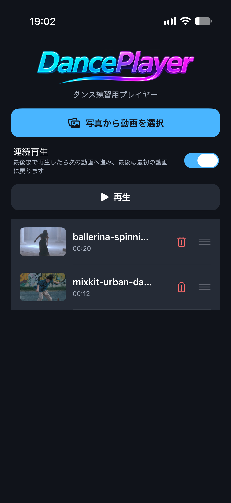
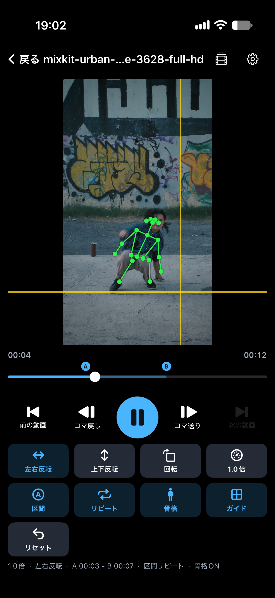
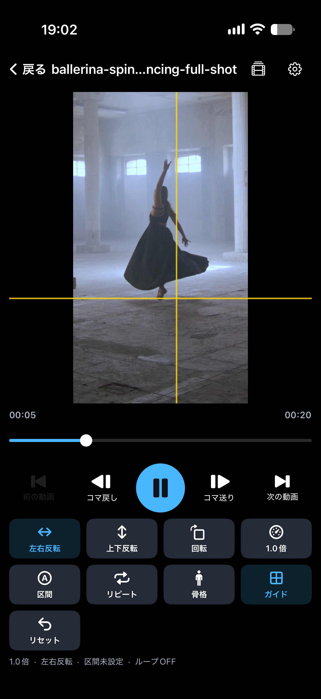

写真から取り込む
動画を新しい順に選んで再生リストに追加します。アプリ内から削除しても、写真ライブラリの元動画は削除されません。
iPhoneアプリ
写真ライブラリのダンス動画を、速度・反転・区間・ガイド線・骨格で繰り返し確認できます。再生中の見た目だけを変えるので、元の動画はそのまま残ります。
選んだ動画はアプリの中へ複製します。反転、回転、速度、区間を使っても、写真ライブラリの元動画は変更しません。
動画を新しい順に選んで再生リストに追加します。アプリ内から削除しても、写真ライブラリの元動画は削除されません。
最後まで再生すると次の動画へ進み、最後の動画のあとは最初の動画に戻って再生します。
左右反転、上下反転、90度回転を、切り替わる動きつきで表示します。向きは表示だけに反映されます。
0.25倍から2.0倍まで、音程を保ったまま速度を変えられます。1フレームずつ戻したり送ったりできます。
A地点とB地点を決めると、その区間だけを再生します。区間の外から再生したときは、区間の先頭から始まります。
画面に固定したガイド線で位置を合わせられます。骨格をオンにすると、検出した関節を緑の点と線で動画の上に重ねます。
再生リスト、骨格表示、ガイド線の表示です。


